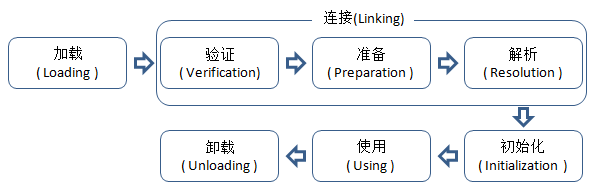

<!DOCTYPE html>
<html lang="en">
<head>
    <meta charset="utf-8">
    
    <title>类加载的时机 | YingLong</title>
    
    
        <meta name="keywords" content="JVM">
    
    <meta name="viewport" content="width=device-width, initial-scale=1, maximum-scale=1">
    <meta name="description" content="Class文件中描述的各种信息最终都需要加载到虚拟机中之后才能运行和使用，虚拟机把描述类的数据从Class文件加载到内存，并对数据进行校验、转换解析和初始化，最终形成可被虚拟机直接使用的Java类型。 类型的加载、连接和初始化过程都是在程序运行期间完成的，这虽然会令类加载时稍微增加一些性能开销，但能够提供高度的灵活性，">
<meta name="keywords" content="JVM">
<meta property="og:type" content="article">
<meta property="og:title" content="类加载的时机">
<meta property="og:url" content="http://yaoyinglong.github.io/Blog/Java/VM/类加载的时机/index.html">
<meta property="og:site_name" content="YingLong">
<meta property="og:description" content="Class文件中描述的各种信息最终都需要加载到虚拟机中之后才能运行和使用，虚拟机把描述类的数据从Class文件加载到内存，并对数据进行校验、转换解析和初始化，最终形成可被虚拟机直接使用的Java类型。 类型的加载、连接和初始化过程都是在程序运行期间完成的，这虽然会令类加载时稍微增加一些性能开销，但能够提供高度的灵活性，其天生的动态扩展性就是依赖运行期动态加载和动态连接。面向接口的应用程序可以等到运">
<meta property="og:locale" content="en">
<meta property="og:image" content="http://yaoyinglong.github.io/images/类的生命周期.png">
<meta property="og:updated_time" content="2019-06-27T09:26:09.585Z">
<meta name="twitter:card" content="summary">
<meta name="twitter:title" content="类加载的时机">
<meta name="twitter:description" content="Class文件中描述的各种信息最终都需要加载到虚拟机中之后才能运行和使用，虚拟机把描述类的数据从Class文件加载到内存，并对数据进行校验、转换解析和初始化，最终形成可被虚拟机直接使用的Java类型。 类型的加载、连接和初始化过程都是在程序运行期间完成的，这虽然会令类加载时稍微增加一些性能开销，但能够提供高度的灵活性，其天生的动态扩展性就是依赖运行期动态加载和动态连接。面向接口的应用程序可以等到运">
<meta name="twitter:image" content="http://yaoyinglong.github.io/images/类的生命周期.png">
    

    

    
        <link rel="icon" href="/favicon.ico">
    

    <link rel="stylesheet" href="/libs/font-awesome/css/font-awesome.min.css">
    <link rel="stylesheet" href="/libs/open-sans/styles.css">
    <link rel="stylesheet" href="/libs/source-code-pro/styles.css">

    <link rel="stylesheet" href="/css/style.css">
    <script src="/libs/jquery/2.1.3/jquery.min.js"></script>
    <script src="/libs/jquery/plugins/cookie/1.4.1/jquery.cookie.js"></script>
    
    
        <link rel="stylesheet" href="/libs/lightgallery/css/lightgallery.min.css">
    
    
        <link rel="stylesheet" href="/libs/justified-gallery/justifiedGallery.min.css">
    
    
    
    


</head>
</html>
<body>
    <div id="container">
        <header id="header">
    <div id="header-main" class="header-inner">
        <div class="outer">
            <a href="/" id="logo">
                <i class="logo"></i>
                <span class="site-title">YingLong</span>
            </a>
            <nav id="main-nav">
                
                    <a class="main-nav-link" href="/">Home</a>
                
                    <a class="main-nav-link" href="/archives">Archives</a>
                
                    <a class="main-nav-link" href="/categories">Categories</a>
                
                    <a class="main-nav-link" href="/tags">Tags</a>
                
                    <a class="main-nav-link" href="/about">About</a>
                
            </nav>
            
            <div id="search-form-wrap">

    <form class="search-form">
        <input type="text" class="ins-search-input search-form-input" placeholder="Search">
        <button type="submit" class="search-form-submit"></button>
    </form>
    <div class="ins-search">
    <div class="ins-search-mask"></div>
    <div class="ins-search-container">
        <div class="ins-input-wrapper">
            <input type="text" class="ins-search-input" placeholder="Type something...">
            <span class="ins-close ins-selectable"><i class="fa fa-times-circle"></i></span>
        </div>
        <div class="ins-section-wrapper">
            <div class="ins-section-container"></div>
        </div>
    </div>
</div>
<script>
(function (window) {
    var INSIGHT_CONFIG = {
        TRANSLATION: {
            POSTS: 'Posts',
            PAGES: 'Pages',
            CATEGORIES: 'Categories',
            TAGS: 'Tags',
            UNTITLED: '(Untitled)',
        },
        ROOT_URL: '/',
        CONTENT_URL: '/content.json',
    };
    window.INSIGHT_CONFIG = INSIGHT_CONFIG;
})(window);
</script>
<script src="/js/insight.js"></script>

</div>
        </div>
    </div>
    <div id="main-nav-mobile" class="header-sub header-inner">
        <table class="menu outer">
            <tr>
                
                    <td><a class="main-nav-link" href="/">Home</a></td>
                
                    <td><a class="main-nav-link" href="/archives">Archives</a></td>
                
                    <td><a class="main-nav-link" href="/categories">Categories</a></td>
                
                    <td><a class="main-nav-link" href="/tags">Tags</a></td>
                
                    <td><a class="main-nav-link" href="/about">About</a></td>
                
                <td>
                    
    <div class="search-form">
        <input type="text" class="ins-search-input search-form-input" placeholder="Search">
    </div>

                </td>
            </tr>
        </table>
    </div>
</header>

        <div class="outer">
            
            
                <aside id="sidebar">
   
        
    <div class="widget-wrap" id="categories">
        <h3 class="widget-title">
            <span>categories</span>
            &nbsp;
            <a id="allExpand" href="#">
                <i class="fa fa-angle-double-down fa-2x"></i>
            </a>
        </h3>
        
        
        
         <ul class="unstyled" id="tree"> 
                    <li class="directory">
                        <a href="#" data-role="directory">
                            <i class="fa fa-folder"></i>
                            &nbsp;
                            DB
                        </a>
                         <ul class="unstyled" id="tree">  <li class="file"><a href="/Blog/DB/MySQL/">MySQL常用总结</a></li>  </ul> 
                    </li> 
                    
                    <li class="directory">
                        <a href="#" data-role="directory">
                            <i class="fa fa-folder"></i>
                            &nbsp;
                            Git
                        </a>
                         <ul class="unstyled" id="tree">  <li class="file"><a href="/Blog/Git/GIt常用命令/">Git常用命令</a></li>  <li class="file"><a href="/Blog/Git/GIt基本概念/">Git基本概念</a></li>  <li class="file"><a href="/Blog/Git/分支管理理解/">分支管理理解</a></li>  </ul> 
                    </li> 
                    
                    <li class="directory open">
                        <a href="#" data-role="directory">
                            <i class="fa fa-folder-open"></i>
                            &nbsp;
                            Java
                        </a>
                         <ul class="unstyled" id="tree"> 
                    <li class="directory open">
                        <a href="#" data-role="directory">
                            <i class="fa fa-folder-open"></i>
                            &nbsp;
                            VM
                        </a>
                         <ul class="unstyled" id="tree">  <li class="file"><a href="/Blog/Java/VM/HotSpot收集算法实现/">HotSpot收集算法实现</a></li>  <li class="file"><a href="/Blog/Java/VM/JVM内存池/">JVM内存池</a></li>  <li class="file"><a href="/Blog/Java/VM/内存非配与回收策略/">内存分配与回收策略</a></li>  <li class="file"><a href="/Blog/Java/VM/Java内存区域/">Java内存区域</a></li>  <li class="file"><a href="/Blog/Java/VM/Minor&Major&Full GC/">Minor&Major&Full GC</a></li>  <li class="file"><a href="/Blog/Java/VM/堆中对象分配&布局&访问/">堆中对象分配&布局&访问</a></li>  <li class="file"><a href="/Blog/Java/VM/OutOfMemoryError异常/">OOM异常实验</a></li>  <li class="file"><a href="/Blog/Java/VM/对象是否存活/">对象是否存活</a></li>  <li class="file"><a href="/Blog/Java/VM/方法调用/">方法调用</a></li>  <li class="file active"><a href="/Blog/Java/VM/类加载的时机/">类加载的时机</a></li>  <li class="file"><a href="/Blog/Java/VM/运行时栈帧结构/">运行时栈帧结构</a></li>  <li class="file"><a href="/Blog/Java/VM/垃圾收集算法/">垃圾收集算法</a></li>  <li class="file"><a href="/Blog/Java/VM/垃圾收集器/">垃圾收集器</a></li>  <li class="file"><a href="/Blog/Java/VM/字节码指令/">字节码指令</a></li>  <li class="file"><a href="/Blog/Java/VM/类加载器/">类加载器</a></li>  <li class="file"><a href="/Blog/Java/VM/理解GC日志/">理解GC日志</a></li>  <li class="file"><a href="/Blog/Java/VM/Class文件结构/">Class文件结构</a></li>  <li class="file"><a href="/Blog/Java/VM/属性表集合/">属性表集合</a></li>  <li class="file"><a href="/Blog/Java/VM/类加载过程/">类加载过程</a></li>  </ul> 
                    </li> 
                    
                    <li class="directory">
                        <a href="#" data-role="directory">
                            <i class="fa fa-folder"></i>
                            &nbsp;
                            基础
                        </a>
                         <ul class="unstyled" id="tree">  <li class="file"><a href="/Blog/Java/基础/lambda常用总结/">lambda常用总结</a></li>  <li class="file"><a href="/Blog/Java/基础/时间及日期总结/">Java8时间及日期</a></li>  </ul> 
                    </li> 
                    
                    <li class="directory">
                        <a href="#" data-role="directory">
                            <i class="fa fa-folder"></i>
                            &nbsp;
                            多线程
                        </a>
                         <ul class="unstyled" id="tree">  <li class="file"><a href="/Blog/Java/多线程/原子性、可见性、有序性/">原子性、可见性、有序性</a></li>  <li class="file"><a href="/Blog/Java/多线程/线程安全/">线程安全</a></li>  <li class="file"><a href="/Blog/Java/多线程/线程安全实现方式/">线程安全实现方式</a></li>  </ul> 
                    </li> 
                     </ul> 
                    </li> 
                    
                    <li class="directory">
                        <a href="#" data-role="directory">
                            <i class="fa fa-folder"></i>
                            &nbsp;
                            Linux
                        </a>
                         <ul class="unstyled" id="tree">  <li class="file"><a href="/Blog/Linux/Linux常用命令/">Linux常用命令</a></li>  <li class="file"><a href="/Blog/Linux/Linux常用技巧/">Linux常用技巧</a></li>  </ul> 
                    </li> 
                    
                    <li class="directory">
                        <a href="#" data-role="directory">
                            <i class="fa fa-folder"></i>
                            &nbsp;
                            Maven
                        </a>
                         <ul class="unstyled" id="tree">  <li class="file"><a href="/Blog/Maven/Maven属性/">Maven属性</a></li>  <li class="file"><a href="/Blog/Maven/Maven基础/">Maven基础</a></li>  <li class="file"><a href="/Blog/Maven/Maven常用/">Maven常用</a></li>  <li class="file"><a href="/Blog/Maven/Maven常用工具/">Maven常用工具</a></li>  <li class="file"><a href="/Blog/Maven/Maven插件编写/">Maven插件编写</a></li>  <li class="file"><a href="/Blog/Maven/Maven生命周期/">Maven生命周期</a></li>  <li class="file"><a href="/Blog/Maven/Maven仓库/">Maven仓库</a></li>  <li class="file"><a href="/Blog/Maven/Maven插件基础/">Maven插件基础</a></li>  <li class="file"><a href="/Blog/Maven/Maven常用插件/">Maven常用插件</a></li>  <li class="file"><a href="/Blog/Maven/Maven聚合与继承/">Maven聚合与继承</a></li>  <li class="file"><a href="/Blog/Maven/Maven标签全解/">Maven标签全解</a></li>  </ul> 
                    </li> 
                    
                    <li class="directory">
                        <a href="#" data-role="directory">
                            <i class="fa fa-folder"></i>
                            &nbsp;
                            Test
                        </a>
                         <ul class="unstyled" id="tree">  <li class="file"><a href="/Blog/Test/IT测试总结/">IT测试总结</a></li>  <li class="file"><a href="/Blog/Test/JMeter日常总结/">JMeter日常总结</a></li>  <li class="file"><a href="/Blog/Test/LoadRunner日常总结/">LoadRunner日常总结</a></li>  <li class="file"><a href="/Blog/Test/UT测试总结/">UT测试总结</a></li>  </ul> 
                    </li> 
                    
                    <li class="directory">
                        <a href="#" data-role="directory">
                            <i class="fa fa-folder"></i>
                            &nbsp;
                            协议族
                        </a>
                         <ul class="unstyled" id="tree">  <li class="file"><a href="/Blog/协议族/以太网/">以太网</a></li>  <li class="file"><a href="/Blog/协议族/地址解析协议/">地址解析协议ARP</a></li>  <li class="file"><a href="/Blog/协议族/网络基础知识/">网络基础知识</a></li>  <li class="file"><a href="/Blog/协议族/TCPIP四层&五层模型/">TCP/IP四层&五层模型</a></li>  </ul> 
                    </li> 
                    
                    <li class="directory">
                        <a href="#" data-role="directory">
                            <i class="fa fa-folder"></i>
                            &nbsp;
                            杂记
                        </a>
                         <ul class="unstyled" id="tree">  <li class="file"><a href="/Blog/杂记/IDEA常用插件/">IDEA常用插件</a></li>  <li class="file"><a href="/Blog/杂记/IDEA快捷的使用/">IDEA的快捷使用</a></li>  <li class="file"><a href="/Blog/杂记/XSD使用总结/">XSD实用总结</a></li>  <li class="file"><a href="/Blog/杂记/SonarQube配置总结/">SonarQube配置总结</a></li>  <li class="file"><a href="/Blog/杂记/Arthas诊断工具/">Arthas诊断工具</a></li>  </ul> 
                    </li> 
                    
                    <li class="directory">
                        <a href="#" data-role="directory">
                            <i class="fa fa-folder"></i>
                            &nbsp;
                            框架
                        </a>
                         <ul class="unstyled" id="tree"> 
                    <li class="directory">
                        <a href="#" data-role="directory">
                            <i class="fa fa-folder"></i>
                            &nbsp;
                            Spring
                        </a>
                         <ul class="unstyled" id="tree">  <li class="file"><a href="/Blog/框架/Spring/Spring Gzip压缩/">Spring Gzip压缩</a></li>  <li class="file"><a href="/Blog/框架/Spring/SpringMvc异步/">SpringMvc异步原理及实现</a></li>  <li class="file"><a href="/Blog/框架/Spring/Hystrix总结/">Hystrix总结</a></li>  </ul> 
                    </li> 
                     <li class="file"><a href="/Blog/框架/Redis分布式锁实现/">Redis分布式锁实现</a></li>  <li class="file"><a href="/Blog/框架/Tomcat工作原理/">Tomcat工作原理</a></li>  </ul> 
                    </li> 
                     <li class="file"><a href="/Blog/index/">Welcome YingLong's Blog</a></li>  </ul> 
    </div>
    <script>
        $(document).ready(function() {
            var iconFolderOpenClass  = 'fa-folder-open';
            var iconFolderCloseClass = 'fa-folder';
            var iconAllExpandClass = 'fa-angle-double-down';
            var iconAllPackClass = 'fa-angle-double-up';
            // Handle directory-tree expansion:
            // 左键单独展开目录
            $(document).on('click', '#categories a[data-role="directory"]', function (event) {
                event.preventDefault();

                var icon = $(this).children('.fa');
                var expanded = icon.hasClass(iconFolderOpenClass);
                var subtree = $(this).siblings('ul');
                icon.removeClass(iconFolderOpenClass).removeClass(iconFolderCloseClass);
                if (expanded) {
                    if (typeof subtree != 'undefined') {
                        subtree.slideUp({ duration: 100 });
                    }
                    icon.addClass(iconFolderCloseClass);
                } else {
                    if (typeof subtree != 'undefined') {
                        subtree.slideDown({ duration: 100 });
                    }
                    icon.addClass(iconFolderOpenClass);
                }
            });
            // 右键展开下属所有目录
            $('#categories a[data-role="directory"]').bind("contextmenu", function(event){
                event.preventDefault();
                
                var icon = $(this).children('.fa');
                var expanded = icon.hasClass(iconFolderOpenClass);
                var listNode = $(this).siblings('ul');
                var subtrees = $.merge(listNode.find('li ul'), listNode);
                var icons = $.merge(listNode.find('.fa'), icon);
                icons.removeClass(iconFolderOpenClass).removeClass(iconFolderCloseClass);
                if(expanded) {
                    subtrees.slideUp({ duration: 100 });
                    icons.addClass(iconFolderCloseClass);
                } else {
                    subtrees.slideDown({ duration: 100 });
                    icons.addClass(iconFolderOpenClass);
                }
            })
            // 展开关闭所有目录按钮
            $(document).on('click', '#allExpand', function (event) {
                event.preventDefault();
                
                var icon = $(this).children('.fa');
                var expanded = icon.hasClass(iconAllExpandClass);
                icon.removeClass(iconAllExpandClass).removeClass(iconAllPackClass);
                if(expanded) {
                    $('#sidebar .fa.fa-folder').removeClass('fa-folder').addClass('fa-folder-open')
                    $('#categories li ul').slideDown({ duration: 100 });
                    icon.addClass(iconAllPackClass);
                } else {
                    $('#sidebar .fa.fa-folder-open').removeClass('fa-folder-open').addClass('fa-folder')
                    $('#categories li ul').slideUp({ duration: 100 });
                    icon.addClass(iconAllExpandClass);
                }
            });  
        });
    </script>

    
    <div id="toTop" class="fa fa-angle-up"></div>
</aside>
            
            <section id="main"><article id="post-Java/VM/类加载的时机" class="article article-type-post" itemscope itemprop="blogPost">
    <div class="article-inner">
        
        
            <header class="article-header">
                
                    <div class="article-meta">
                        
    <div class="article-category">
    	<i class="fa fa-folder"></i>
        <a class="article-category-link" href="/categories/Java/">Java</a><i class="fa fa-angle-right"></i><a class="article-category-link" href="/categories/Java/VM/">VM</a>
    </div>

                        
    <div class="article-tag">
        <i class="fa fa-tag"></i>
        <a class="tag-link" href="/tags/JVM/">JVM</a>
    </div>

                        
    <div class="article-date">
        <i class="fa fa-calendar"></i>
        <a href="/Blog/Java/VM/类加载的时机/">
            <time datetime="2018-02-24T16:00:00.000Z" itemprop="datePublished">2018-02-25</time>
        </a>
    </div>


                        
                    </div>
                
                
    
        <h1 class="article-title" itemprop="name">
            类加载的时机
        </h1>
    

            </header>
        
        
        <div class="article-entry" itemprop="articleBody">
        
        
            
        
        
            <p><strong><code>Class</code>文件</strong>中描述的<strong>各种信息</strong>最终都需要<strong>加载</strong>到<strong>虚拟机</strong>中之后才能<strong>运行</strong>和<strong>使用</strong>，虚拟机把<strong>描述类的数据</strong>从Class文件<strong>加载到内存</strong>，并对数据进行<strong>校验、转换解析</strong>和<strong>初始化</strong>，最终形成<strong>可被虚拟机直接使用的Java类型</strong>。</p>
<p><strong>类型的加载、连接</strong>和<strong>初始化</strong>过程都是在程序<strong>运行期间</strong>完成的，这虽然会令类加载时稍微<strong>增加一些性能开销</strong>，但能够提供高度的<strong>灵活性</strong>，其天生的<strong>动态扩展性</strong>就是<strong>依赖运行期动态加载</strong>和<strong>动态连接</strong>。<strong>面向接口</strong>的应用程序可以等到<strong>运行时</strong>再指定其<strong>实际的实现类</strong>，用户可以通过<strong>预定义</strong>的和<strong>自定义类加载器</strong>，让一个本地应用程序可以在<strong>运行时从网络</strong>或<strong>其他地方</strong>加载一个<strong>二进制流</strong>作为程序代码的一部份，如<strong><code>Applet、JSP、OSGi</code></strong>等技术。</p>
<h3 id="类加载的时机"><a href="#类加载的时机" class="headerlink" title="类加载的时机"></a>类加载的时机</h3><p>类从被<strong>加载到虚拟机内存中</strong>开始，到<strong>卸载出内存</strong>的整个<strong>生命周期</strong>为<strong>加载</strong>、<strong>验证</strong>、<strong>准备</strong>、<strong>解析</strong>、<strong>初始化</strong>、<strong>使用</strong>、<strong>卸载</strong>7个阶段,<strong>验证、准备、解析</strong>3个部分<strong>统称为连接</strong>。<br></p>
<p><strong>加载、验证、准备、初始化、卸载</strong>这5个阶段的<strong>顺序是确定的</strong>，但<strong>解析阶段</strong>在某些情况下<strong>可以在初始阶段之后</strong>，这是<strong>为了支持运行时绑定即动态绑定</strong>。</p>
<p>初始化阶段虚拟机规范严格规定了<strong>有且只有<code>5</code>种情况必须立即对类进行初始化</strong>：</p>
<ul>
<li>遇到<strong><code>new、getstatic、putstatic、invokestatic</code></strong>这4条字节码指令时，若类未进行初始化需先触发其初始化。</li>
<li>使用<strong><code>java.lang.reflect</code></strong>包的方法对类进行<strong>反射调用</strong>时，若类未进行初始化需先触发其初始化。</li>
<li>当<strong>初始化类时其父类未初始化</strong>，需先触发其父类初始化。</li>
<li>当虚拟机启动时，用户指定一个执行<strong>主类</strong>即包含main方法的类，虚拟机会<strong>先初始化该类</strong>。</li>
<li>若一个<strong><code>java.lang.invoke.MethodHandle</code></strong>实例最后的<strong>解析结果是<code>REF_getStatic、REF_putStatic、REF_invokeStatic</code>的方法句柄</strong>，且该方法句柄所<strong>对应的类</strong>未进行过初始化需先触发其初始化。</li>
</ul>
<p>以上5种场景称为对一个类的<strong>主动引用</strong>，除此之外所有引用类的方式都不会触发初始化，称为<strong>被动引用</strong>，被动引用的几种情况：</p>
<ul>
<li>对于静态字段，只有直接定义这股份字段的类才会被初始化，其<strong>子类来引用父类</strong>的中定义的静态字段<strong>只会触发父类的初始化</strong>而不会触发子类的初始化。</li>
<li><strong>通过数组定义来引用类</strong></li>
<li><strong>常量的引用</strong>，常量在编译阶段会存入调用类的常量池种，本质上并没有直接引用到定义常量的类</li>
</ul>
<p><strong>接口</strong>的<strong>加载过程</strong>与<strong>类</strong>的加载过程<strong>稍微有些不同</strong>，<strong>接口中也有初始化过程</strong>，类中可以使用<strong>静态语句块<code>static{}</code></strong>，但是接口中<strong>不能使用<code>static{}</code></strong>语句块，但<strong>编译器</strong>任然会<strong>为接口生成<code>&lt;clinit&gt;</code>类构造器</strong>，用于<strong>初始化</strong>接口中定义的<strong>成员变量</strong>；接口与类的<strong>真正区别</strong>是，当类在初始化时，其父类都已经完成初始化，但接口在初始化时，并<strong>不要求其父类接口全部都完成初始化</strong>，只有在<strong>真正使用</strong>到父类接口的时候才会初始化，例如<strong>引用父类接口中定义的常量</strong>。</p>

            </div>
        
        <footer class="article-footer">
        </footer>
    </div>
</article>


    
<nav id="article-nav">
    
        <a href="/Blog/Java/VM/类加载过程/" id="article-nav-newer" class="article-nav-link-wrap">
            <strong class="article-nav-caption">Newer</strong>
            <div class="article-nav-title">
                
                    类加载过程
                
            </div>
        </a>
    
    
        <a href="/Blog/Java/VM/字节码指令/" id="article-nav-older" class="article-nav-link-wrap">
            <strong class="article-nav-caption">Older</strong>
            <div class="article-nav-title">字节码指令</div>
        </a>
    
</nav>


    
    


<!-- baidu url auto push script -->
<script type="text/javascript">
    !function(){var e=/([http|https]:\/\/[a-zA-Z0-9\_\.]+\.baidu\.com)/gi,r=window.location.href,o=document.referrer;if(!e.test(r)){var n="//api.share.baidu.com/s.gif";o?(n+="?r="+encodeURIComponent(document.referrer),r&&(n+="&l="+r)):r&&(n+="?l="+r);var t=new Image;t.src=n}}(window);
</script>     
</section>
        </div>
        <footer id="footer">
    <div class="outer">
        <div id="footer-info" class="inner">
            YaoYingLong &copy; 2019 
            <!-- <a rel="license" href="http://creativecommons.org/licenses/by-nc-nd/4.0/"></a> -->
            <br> Powered by <a href="http://hexo.io/" target="_blank" rel="external nofollow noopener noreferrer">Hexo</a>. Theme - <a href="https://github.com/zthxxx/hexo-theme-Wikitten" rel="external nofollow noopener noreferrer" target="_blank">wikitten</a>
        </div>
    </div>
</footer>
        

    
        <script src="/libs/lightgallery/js/lightgallery.min.js"></script>
        <script src="/libs/lightgallery/js/lg-thumbnail.min.js"></script>
        <script src="/libs/lightgallery/js/lg-pager.min.js"></script>
        <script src="/libs/lightgallery/js/lg-autoplay.min.js"></script>
        <script src="/libs/lightgallery/js/lg-fullscreen.min.js"></script>
        <script src="/libs/lightgallery/js/lg-zoom.min.js"></script>
        <script src="/libs/lightgallery/js/lg-hash.min.js"></script>
        <script src="/libs/lightgallery/js/lg-share.min.js"></script>
        <script src="/libs/lightgallery/js/lg-video.min.js"></script>
    
    
        <script src="/libs/justified-gallery/jquery.justifiedGallery.min.js"></script>
    
    
        <script type="text/x-mathjax-config">
    MathJax.Hub.Config({
        tex2jax: {
            inlineMath: [ ["$","$"], ["\\(","\\)"] ],
            skipTags: ['script', 'noscript', 'style', 'textarea', 'pre', 'code'],
            processEscapes: true,
            TeX: {
                equationNumbers: {
                  autoNumber: 'AMS'
                }
            }
        }
    });
    MathJax.Hub.Queue(function() {
        var all = MathJax.Hub.getAllJax();
        for (var i = 0; i < all.length; ++i)
            all[i].SourceElement().parentNode.className += ' has-jax';
    });
</script>
<script async src="//cdnjs.cloudflare.com/ajax/libs/mathjax/2.7.1/MathJax.js?config=TeX-AMS-MML_HTMLorMML"></script>
    


<!-- Custom Scripts -->
<script src="/js/main.js"></script>

    </div>
</body>
